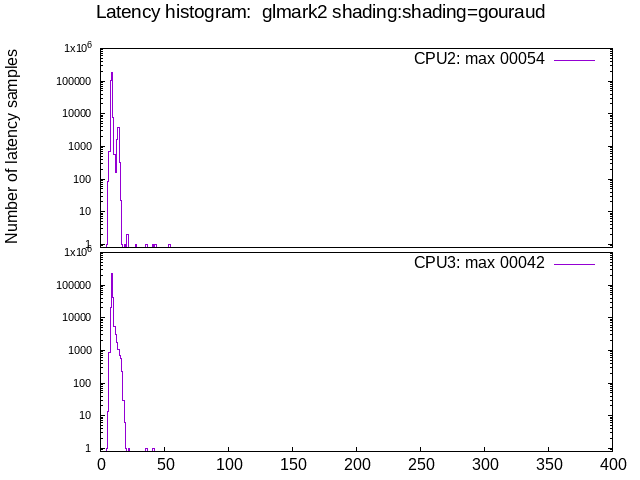

Latency tests: ADLINK MXE-211: GPU, isolcpus=izq
- Date: Fri, 11 Mar 2022 11:18:42 -0600
- Invocation: "./run_tests.sh" "-d" "60" "-o" "test_mxe-211_gpu" "ADLINK MXE-211: GPU, isolcpus=izq"
- cyclictest version: cyclictest V 2.30
- Test duration: 60 seconds
- Kernel commandline: BOOT_IMAGE=/boot/vmlinuz-5.10.0-11-rt-amd64 root=UUID=5f6b62f5-6656-4fbc-ae2e-98590ed81658 ro
- CPU: Intel(R) Atom(TM) Processor E3950 @ 1.60GHz
- Number of CPUs: 4
- Number of isolated CPUs: 4 (0,1,2,3)
- DMI info: dmi:bvnAmericanMegatrendsInc.:bvr2.06.10:bd02/06/2020:svnADLINKTECHNOLOGYInc.:pnMXE210:pvrRev.Ax:rvnADLINKTECHNOLOGYInc.:rnMXE210:rvrB1:cvnADLINKTECHNOLOGYInc.:ct13:cvrRevAx:
- OS description: Debian GNU/Linux 11 (bullseye)
- GPU: Mesa Intel(R) HD Graphics 505 (APL 3) (0x5a84)
- isolcpus=0,1,2,3
- GPU acceleration: yes
Test #01: stress-ng

Test #02: glmark2 build:use-vbo=false

Test #03: glmark2 build:use-vbo=true

Test #04: glmark2 texture:texture-filter=nearest
Test #05: glmark2 texture:texture-filter=linear
Test #06: glmark2 texture:texture-filter=mipmap
Test #07: glmark2 shading:shading=gouraud

Test #08: glmark2 shading:shading=blinn-phong-inf
Note: glmark2 and cyclictest caused system hang here